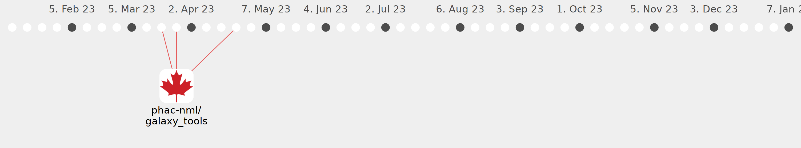

Galaxy Community Activities
ConnorChato
ConnorChato
https://github.com/ConnorChato
Commits all-time:
34
Commits last year:
22

phac-nml/galaxy_tools
(22)
94f95b1
8c3a3fc
3beb2c1
35fb4a6
ff5717e
0f57eb2
21bb39e
6179c9b
9f367d7
ca4fe25
250c948
f2ff701
ca65d8f
169a719
71b253a
6e35510
912ed87
ee57f70
530b737
a55a40e
e0586d0
41983a5